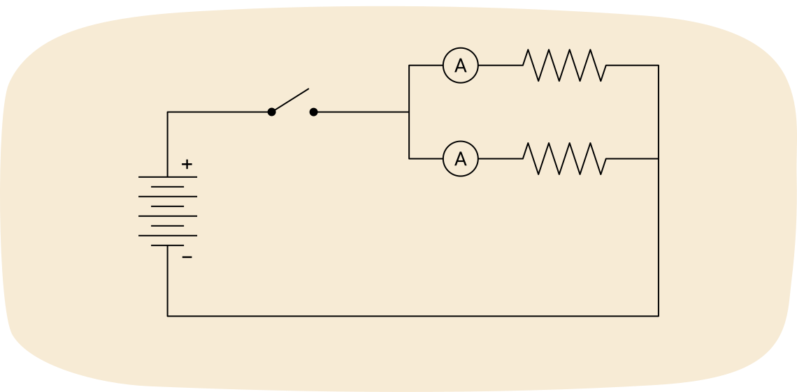

4.6 과제: 종합 프로젝트(culminating project)
이 프로젝트는 SPH3U - 물리학의 최종 평가의 일부입니다. 다른 부분은 종합 프로젝트가 완료된 후 치르는 기말 시험입니다. 담당 교사가 피드백과 점수를 제공할 것입니다.
이 프로젝트에서는 두 가지 과제를 완료합니다: 실험 보고서와 STSE 조사. 이 프로젝트는 물리학 과정의 종합 과제입니다. 교육 과정의 다양한 부분에서 얻은 지식과 사고 능력을 활용하게 됩니다.
제출물은 워드 프로세서와 수학 작업을 위한 수식 편집기를 사용하여 작성해야 합니다. 이미지는 컴퓨터로 만들거나 그린 후 주의 깊게 스캔할 수 있습니다. 이미지는 과제의 적절한 위치에 삽입해야 합니다.
이 과제에 대한 피드백을 활용하여 향후 과제에서 수학적, 과학적 표현을 개선하고, 이 과정의 기말 시험에 필요한 지식을 갖추도록 하세요.
이 과제는 과정 성적의 15%를 차지합니다.
지시 사항
개요
이 프로젝트에는 두 가지 과제가 있습니다. 과제 1은 실험 보고서에 관한 것입니다. 과제 2는 과학, 기술, 사회, 환경(STSE)에 관한 것입니다. 두 과제의 모든 부분을 완료하고, 하나의 전문적인 문서로 정리하며, ILC 이외의 모든 출처를 정확하게 인용하세요.
과제 1: 실험 보고서
실험 보고서(lab report)는 표준 형식을 갖춘 과학적 의사소통입니다. 이 과정에서 실험 보고서는 설명적 제목과 7개의 섹션으로 구성됩니다: 목적, 재료, 기구, 방법, 결과, 분석, 결론. 샘플 보고서는 학습 활동 1.5에서 확인할 수 있습니다. 과제 2와 같은 문서에 다음 조사에 대한 실험 보고서를 작성하세요. 보고서가 전문적으로 형식화되고 맞춤법이 검사되었는지 확인하세요. 실험 보고서에는 다음의 모든 요소가 포함되어야 합니다:
- 설명적 제목. 조사를 완료한 후 설명적 제목을 작성하세요.
- 목적. 이 실험 보고서에서는 한 쌍의 병렬 저항기(parallel resistors)를 단일 저항기로 교체하여 동일한 효과를 얻을 수 있는 방법을 조사합니다. 자신의 말로 목적을 작성하세요.
- 재료. 이 조사에는 학습 활동 4.1의 시뮬레이터를 사용합니다. 시뮬레이터를 사용할 수 없는 경우, 다음에 제공되는 접근 가능한 버전을 사용할 수 있습니다. 회로를 구성한 후, 조사에 사용된 시뮬레이션 구성 요소를 나열하세요.
- 여기를 눌러 "회로 구성 키트: DC - 가상 실험실"새 창에서 열림에 접속하세요
- 또는 여기를 눌러 접근 가능한 버전인 "종합 회로 조사"새 창에서 열림에 접속하세요
- 기구. 조사에 사용된 회로의 스크린샷, 이미지 또는 상세한 서면 설명을 포함하세요.
- 방법. 다음 단계를 포함하세요.
- 회로 구성 키트에서 다음 회로를 만드세요.

- 전압계를 사용하여 전지의 전위차(potential difference)를 측정하세요.
- 스위치를 닫으세요.
- 다음과 같은 표를 사용하여 각 저항기의 전위차와 전류(current), 그리고 저항(resistance)을 기록하세요. (각 저항기를 클릭하여 저항값을 확인하고 조정할 수 있습니다).
|
전위차 (V) |
||||
- 저항기 중 하나는 그대로 두고, 다른 저항기를 다음 값으로 변경하세요: 5.0 Ω, 20.0 Ω, 25.0 Ω, 30.0 Ω, 40.0 Ω. 매번 전위차, 두 저항값, 전류를 표에 기록하세요.
- 스위치를 여세요
- 결과. 완성된 관찰 표의 사본을 포함하세요.
- 분석. 실험 보고서의 분석 섹션에서 각 질문을 완성하세요.
- 각 관찰에 대해 전지를 통과하는 전류를 구하세요.
- 를 사용하여 병렬 저항기 쌍의 등가 저항(equivalent resistance)을 계산하세요. 즉, 저항기 쌍을 직렬의 단일 저항기로 교체한다면, 동일한 전류를 얻기 위해 어떤 저항값이 필요한가요?
- 변화하는 저항의 역수를 x축에, 등가 저항의 역수를 y축에 놓은 그래프를 작성하세요. 값의 역수는 그 값으로 1을 나눈 것과 같다는 점을 기억하세요. 최적 적합선(line of best fit)을 포함하세요.
- 병렬 저항의 역수와 등가 저항의 역수 사이의 관계를 설명하세요.
- 병렬 저항기가 일 때 등가 저항을 예측하기 위해 여러분의 관계식을 사용하세요.
- 이 패턴을 설명하는 공인된 과학 법칙은 입니다. 여러분의 관찰이 이 법칙에 부합하나요?
- 이 실험을 실제로 수행할 경우 취해야 할 두 가지 안전 주의 사항을 설명하세요.
- 결론. 실험 조사의 목적에 답하는 한 문장을 작성하세요.
과제 2: STSE 보고서
이 과정을 통해 여러분은 과학, 기술, 사회, 환경(STSE)과 관련된 많은 이슈를 접했습니다. 이 과정을 탐구하면서 더 많은 이슈를 직접 생각해 보았을 수도 있습니다. 오늘날 빠르게 변화하는 세계에서 과학과 기술이 우리 사회와 환경에 미치는 영향을 인식하는 것이 중요합니다. Ontario 시민들은 과학과 기술을 사회와 환경(STSE)에 연결시킬 필요가 있습니다. 여러분이 완성할 분석은 STSE 이슈를 기반으로 합니다. 보고서가 전문적으로 형식화되고 맞춤법이 검사되었는지 확인하세요. STSE 과제에는 다음의 모든 요소가 포함되어야 합니다.
- 질문. 다음 이슈 중 하나를 선택하거나, 파동, 운동, 힘, 에너지, 전기, 자기와 관련된 자신만의 이슈를 선택하세요. 직접 선택하는 경우, "___해야 하는가?"의 형태의 질문이어야 합니다.
- 캐나다는 원자력 발전을 사용해야 하는가?
- 가정용 조명에 백열등 사용을 금지해야 하는가?
- 정부가 전기 자동차 사용을 지원/장려해야 하는가?
- Ontario에 겨울 타이어 법규를 시행해야 하는가?
- 식품 방사선 조사를 금지해야 하는가?
- 개발자들이 원주민 토지에 수력 발전 댐을 건설할 수 있도록 허용해야 하는가?
- 자신이 선택한 다른 질문: ___해야 하는가?
- 이슈 설명. 중립적인 관점에서 이 과정을 수강하지 않은 사람도 이해할 수 있도록 이슈를 설명하세요. 이 주제가 파동, 운동, 힘, 에너지, 전기 및/또는 자기와 어떻게 관련되는지 포함하세요. 이 설명은 약 한 문단 정도여야 합니다.
- 여러분의 질문에 대한 "예" 답변을 뒷받침하는 세 가지 좋은 논거. 각 논거는 약 한 문단 정도여야 합니다. 논거는 연구를 통해 발견한 문서화된 증거를 사용해야 합니다.
- 여러분의 질문에 대한 "아니오" 답변을 뒷받침하는 세 가지 좋은 논거. 각 논거는 약 한 문단 정도여야 합니다. 논거는 연구를 통해 발견한 문서화된 증거를 사용해야 합니다.
- 결론. 여러분이 제시한 여섯 가지 논거(세 가지 "예"와 세 가지 "아니오")만을 고려했을 때, 여러분의 질문에 대한 답은 무엇이라고 생각하나요?
- 출처 목록. 이 과제를 완료하면서 연구에 사용된 ILC 이외의 모든 출처를 올바르게 인용하세요. 아래 "참고 문헌 및 형식 제출 지침" 링크에 설명된 APA 형식을 사용하세요.
담당 교사가 다음의 성공 기준과 루브릭을 사용하여 여러분의 과제를 채점하고 피드백을 제공할 것입니다. 과제를 제출하기 전에 성공 기준과 루브릭을 검토하세요. 과제 형식, 인용, 또는 표절에 대한 지침이 필요하면 다음 지원 페이지를 검토하세요:
성공 기준 및 루브릭
이전 과제가 모두 채점되어 반환될 때까지 과제 루브릭에 접근할 수 없습니다.
루브릭 버튼을 눌러 접근하세요.
과제 제출 방법
이전 과제가 모두 채점되어 반환될 때까지 과제를 제출할 수 없으며 제출 공간이 표시되지 않습니다.
채점을 위해 과제를 제출하기 전에 Turnitin을 사용하여 표절 여부를 확인하세요. Turnitin은 자가 확인 도구이며, 교사 피드백은 제공되지 않습니다. Turnitin 도구 사용 방법에 대해 자세히 알아보려면 다음 지원 페이지를 검토하세요:
준비가 되면 Turnitin 버튼을 눌러 자가 확인을 한 후, 제출 지시를 따르세요.
준비가 되면 과제 제출 버튼을 눌러 과제를 제출하고 제출 지시를 따르세요.